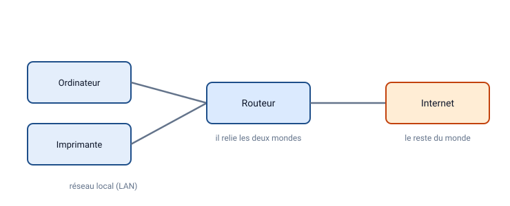
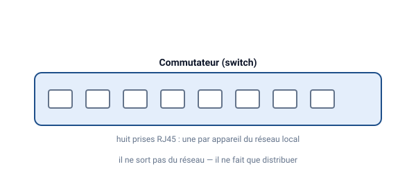
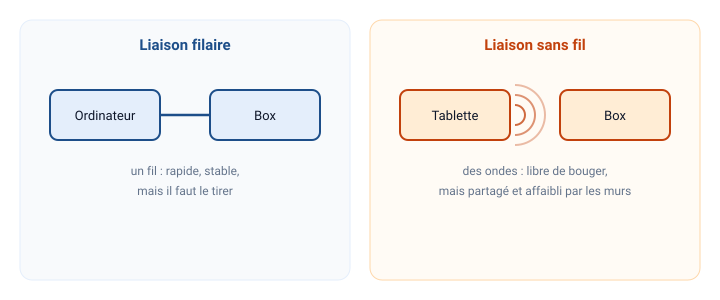
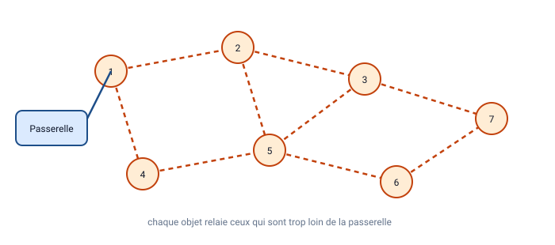
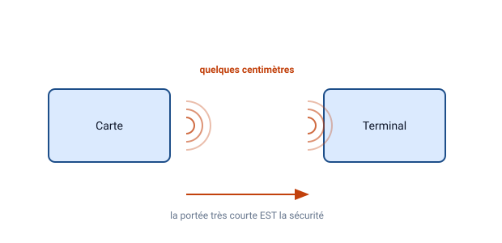
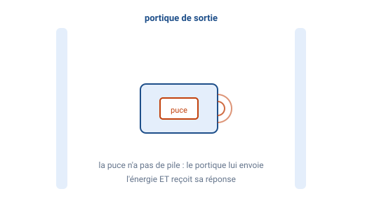
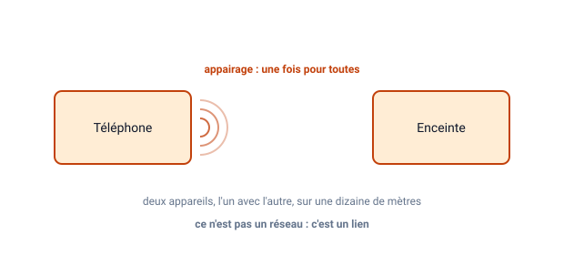
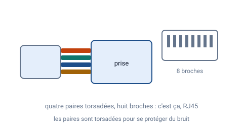
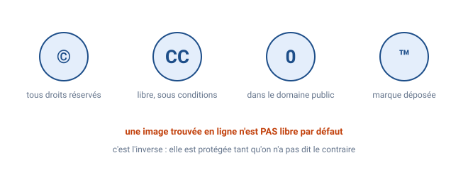
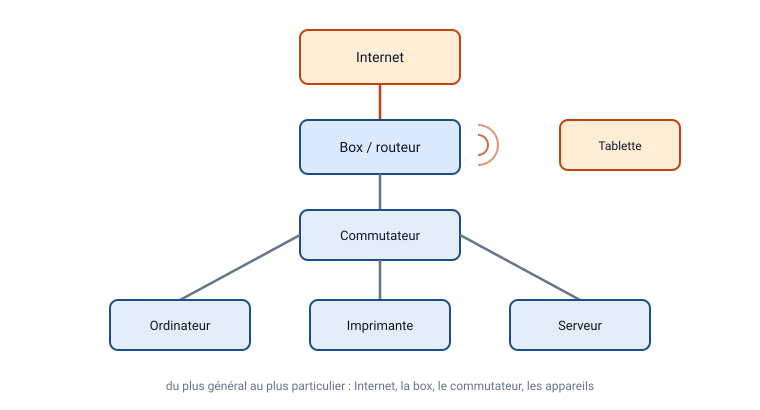

💡 Renseigne ton identité avant de cliquer sur « Corriger tout ».
Le routeur sert principalement à…

Le routeur fait la passerelle entre le réseau local (LAN) et Internet (WAN).Compétence visée : C4.9(1 pt)
Le routeur est un appareil clé dans un réseau. Il connecte le réseau local (LAN, Local Area Network) à un réseau externe comme Internet (WAN, Wide Area Network). Il agit comme une passerelle, gérant le trafic entrant et sortant. Par exemple, il utilise le NAT (Network Address Translation) pour traduire les adresses IP privées du LAN en adresse IP publique pour Internet. Contrairement au switch, qui connecte seulement les appareils au sein du même LAN sans routage externe, le routeur décide du chemin des paquets vers d'autres réseaux. Cela permet à tous les appareils du LAN d'accéder à Internet via une seule connexion.
Un commutateur (switch) sert à…

Le commutateur (switch) distribue le trafic entre les machines du réseau local.Compétence visée : C4.9(1 pt)
Le switch, ou commutateur, est un appareil qui connecte plusieurs appareils au sein d'un réseau local (LAN). Il travaille au niveau 2 du modèle OSI (couche liaison), en commutant les trames Ethernet entre les ports basés sur les adresses MAC. Contrairement à un hub qui diffuse à tous, le switch apprend les adresses MAC et envoie les données seulement au port destinataire, réduisant les collisions et améliorant la performance. Il ne traduit pas les adresses IP en noms (c'est le rôle du DNS). Dans un réseau domestique ou scolaire, il permet à plusieurs PCs de communiquer efficacement sans sortir du LAN.
Deux appareils d’un même LAN partagent la même IPv4.
Compétence visée : C4.8(1 pt)
Dans un réseau local (LAN), chaque appareil doit avoir une adresse IP unique pour éviter les conflits. Si deux appareils ont la même IP, le réseau ne saura pas à qui envoyer les paquets, causant des erreurs de communication, des déconnexions ou des dysfonctionnements. Le DHCP attribue automatiquement des IP uniques, ou on les configure manuellement. C'est comme des adresses postales : deux maisons avec la même adresse causeraient des problèmes de livraison.
À quoi sert le « masque de sous-réseau » ? (mots-clés)
Compétence visée : C4.7(1 pt)
Le masque de sous-réseau est un nombre binaire (ex. 255.255.255.0 ou /24) qui sépare une adresse IP en partie réseau et partie hôte. La partie réseau identifie le sous-réseau, tandis que la partie hôte identifie l'appareil spécifique. Par exemple, pour 192.168.1.10/24, 192.168.1 est le réseau, .10 l'hôte. Cela permet de diviser un grand réseau en sous-réseaux plus petits pour une meilleure organisation, sécurité et efficacité. Sans masque, les appareils ne sauraient si une IP est locale ou distante, impactant le routage.
Laquelle est une adresse privée classique ?
Compétence visée : C4.7(1 pt)
Les adresses IP privées sont réservées pour les réseaux internes et ne sont pas routables sur Internet. Les plages classiques sont : 10.0.0.0/8 (10.0.0.0 à 10.255.255.255), 172.16.0.0/12 (172.16.0.0 à 172.31.255.255), et 192.168.0.0/16 (192.168.0.0 à 192.168.255.255). Par exemple, 172.16.5.10 est privée. 8.8.8.8 est publique (DNS Google), et 11.0.0.5 est publique. Elles sont utilisées dans les LAN pour éviter les conflits globaux, avec NAT pour accéder à Internet.
Chemin du trafic PC→Internet dans la salle :
Compétence visée : C4.9(1 pt)
Dans un réseau local typique, le trafic d'un PC vers Internet passe d'abord par le switch (qui connecte les appareils locaux), puis par le routeur/modEM (la passerelle qui route vers le WAN). Le switch gère le trafic interne, le routeur translate et envoie à Internet. Un chemin direct n'existe pas sans routeur, et l'ordre inverse (routeur puis switch) n'a pas de sens car le switch est en amont pour le LAN.
Coche les liaisons filaires :

RJ45 et fibre = liaisons filaires ; Wi-Fi/Bluetooth = liaisons sans fil.Compétence visée : C4.8(1 pt)
Une liaison filaire utilise un câble physique pour transmettre les données, comme Ethernet RJ45 (câble torsadé cuivre) ou fibre optique (lumière dans verre). Elles offrent une connexion stable, rapide et sécurisée, mais limitée par la longueur du câble. Wi-Fi et Bluetooth sont sans fil, utilisant des ondes radio, plus flexibles mais sensibles aux interférences et moins sécurisées. Choisir filaire pour des performances hautes en fixe.
Zigbee utilise typiquement la bande…

Zigbee connecte des objets (IoT) en réseau maillé à faible consommation.Compétence visée : C7.8(1 pt)
Zigbee est un protocole pour l'IoT, utilisant la bande 2,4 GHz (comme Wi-Fi, mais avec moins de puissance pour économiser l'énergie). Cela permet un réseau maillé où les appareils relaient les signaux, étendant la portée. 13,56 MHz est pour NFC (courte portée), et 860–960 MHz pour RFID UHF (identification longue portée). Zigbee est idéal pour domotique car faible consommation, fiable en mesh, et supporte jusqu'à 65 000 nœuds.
NFC a une portée…

NFC fonctionne à quelques centimètres : badge/paiement sans contact.Compétence visée : C7.8(1 pt)
NFC (Near Field Communication) est une technologie radio à très courte portée (typiquement <10 cm, max 20 cm), fonctionnant à 13,56 MHz. Cela assure la sécurité pour des usages comme le paiement sans contact ou les badges d'accès, évitant les interceptions distantes. Contrairement à Bluetooth (jusqu'à 10m) ou Wi-Fi (dizaines de m), NFC nécessite un contact proche, rendant les transactions intentionnelles et sécurisées.
Donne un usage typique de la RFID (exemples)

RFID identifie un objet à distance : puces passives/actives selon le besoin.Compétence visée : C7.8(1 pt)
RFID (Radio Frequency Identification) utilise des étiquettes (tags) avec une puce et antenne pour identifier des objets sans contact. Usages typiques : badges d'accès (contrôle entrée), antivols en magasins (portiques détectent tags non désactivés), inventaire logistique (suivi stocks automatisés), péages autoroutiers (tags sur voitures pour paiement rapide). Les tags passifs (sans batterie, alimentés par lecteur) sont courants pour coût bas, actifs pour longue portée. Cela améliore l'efficacité en automatisant l'identification.
Le protocole de sécurité Wi-Fi conseillé à l’école :
Compétence visée : C4.8(1 pt)
Pour sécuriser un réseau Wi-Fi, WPA2 ou WPA3 sont recommandés car ils utilisent un chiffrement fort (AES) et des clés dynamiques pour protéger les données contre les écoutes et attaques. WEP est obsolète et craquable en minutes. Aucun protocole laisse le réseau ouvert aux intrus. En école, WPA2/3 avec mot de passe fort et filtrage MAC protège les données élèves et évite les usages inappropriés.
Le vidéo‑projecteur de la salle est relié en…

Le vidéoprojecteur du Doc. 3 communique en Bluetooth (et non en Wi-Fi).Compétence visée : C7.8(1 pt)
Selon le document 3, le vidéo-projecteur est connecté via Bluetooth, une technologie sans fil à courte portée (10m) pour audio/vidéo, avec faible latence. Wi-Fi est pour réseaux plus larges, NFC pour contact proche. Bluetooth est idéal pour projection sans câble, mais nécessite appairage. En classe, cela facilite le partage d'écran depuis un PC ou mobile sans infrastructure réseau complexe.
DHCP attribue…
Compétence visée : C4.7(1 pt)
DHCP (Dynamic Host Configuration Protocol) est un serveur qui attribue automatiquement des adresses IP dynamiques aux appareils dans un réseau, évitant les configurations manuelles et conflits. Il 'loue' une IP pour une durée, avec masque, passerelle, DNS. Les noms de domaine sont gérés par DNS. DHCP simplifie la gestion en LAN, surtout avec appareils mobiles entrant/sortant.
DNS sert à… (mots-clés)
Compétence visée : C4.8(1 pt)
DNS (Domain Name System) traduit les noms de domaine humains (ex. google.com) en adresses IP machines (ex. 142.250.189.174). C'est comme un annuaire : quand vous tapez un URL, votre PC demande au DNS l'IP correspondante pour se connecter. Sans DNS, on devrait mémoriser les IP. Il est hiérarchique, avec serveurs racine, TLD, autoritaires. En réseau, configurez un DNS comme 8.8.8.8 pour résolution rapide.
Quel câble pour relier un PC au switch ?

Un câble RJ45 relie un ordinateur au commutateur : liaison Ethernet filaire.Compétence visée : C4.8(1 pt)
Pour connecter un PC à un switch dans un réseau Ethernet, utilisez un câble RJ45 (Registered Jack 45), aussi appelé câble Ethernet ou Cat5/6. Il a 8 broches pour transmission bidirectionnelle jusqu'à 1Gbps+. RJ11 est pour téléphonie (4-6 broches), USB pour périphériques courts. Le RJ45 est torsadé pour réduire interférences, avec normes comme straight-through pour PC-switch. Vérifiez les catégories (Cat6 pour haut débit).
Un cookie est stocké…
Compétence visée : C1.4(1 pt)
Un cookie est un petit fichier texte stocké sur l'appareil de l'utilisateur (client) par le navigateur, à la demande du site. Il contient des données comme ID session, préférences. Le site l'envoie au navigateur, qui le renvoie à chaque visite. Cela permet de se souvenir des connexions ou paniers. Non stocké sur le site pour protéger la vie privée, mais peut être utilisé pour traçage, d'où les consents RGPD.
Une raison de refuser des cookies non essentiels :
Compétence visée : C1.4(1 pt)
Refuser les cookies non essentiels protège la vie privée en limitant le traçage et la collecte de données personnelles. Ces cookies (publicitaires, analytiques) suivent vos habitudes pour profils targeted. En refusant, vous évitez la vente de données à tiers, réduisez les risques de fuites, et respectez RGPD. Les essentiels (session, sécurité) sont obligatoires, mais non essentiels sont optionnels pour une navigation plus anonyme.
Dans une chanson, le droit d’auteur protège…

Le droit d’auteur protège le texte et la musique ; de nombreuses œuvres sont sous licences CC.Compétence visée : C1.4(1 pt)
Le droit d'auteur protège les œuvres originales comme les paroles (texte) et la composition musicale d'une chanson, dès création, pour 70 ans après mort de l'auteur. Cela empêche copie, distribution sans permission. Le fait d'être gratuit n'est pas protégé ; une œuvre gratuite peut être sous copyright. Utilisez Creative Commons pour licences libres permettant partage avec conditions (attribution, non-commercial).
Décès en 2025 → Domaine public en (année) :
Compétence visée : C1.4(1 pt)
Le droit d'auteur dure 70 ans après le décès de l'auteur. Pour un décès en 2025, l'œuvre entre dans le domaine public le 1er janvier de l'année suivante +70 ans, soit 2096. Alors, elle est libre d'usage sans permission. Cela encourage la création tout en permettant l'accès public eventual. Vérifiez exceptions comme œuvres anonymes ou collectives.
Document 2 : Tableau des imprimantes
Imprimante
Connexion
Zongo 1
USB (filaire)
Aber Z2
Wi-Fi
Prim2be
Bluetooth
Aber Z3
Ethernet (filaire)
Nombre de lignes d’objets dans le tableau imprimantes :
Compétence visée : C4.6(1 pt)
Un tableau organise des données en lignes et colonnes. Ici, comptez les lignes de données (objets), excluant l'en-tête. Il y en a 4 (Zongo 1, Aber Z2, Prim2be, Aber Z3). Cela aide à analyser des ensembles de données, comme en informatique pour bases de données ou spreadsheets. Compter précisément évite erreurs en programmation ou stats.
Imprimantes connectées sans fil (2 choix) :
Compétence visée : C4.5(2 pts)
Les connexions sans fil n'utilisent pas de câbles, comme Wi-Fi (réseau local radio) ou Bluetooth (courte portée). Dans le tableau, Aber Z2 (Wi-Fi) et Prim2be (Bluetooth) sont sans fil. Zongo 1 (USB) et Aber Z3 (Ethernet) sont filaires. Sans fil offre mobilité mais peut avoir latence ; filaire est plus stable. Choisir selon besoins en impression mobile ou fixe.
Un /32 en IPv4 correspond à…
Compétence visée : C4.7(1 pt)
En notation CIDR, /32 en IPv4 signifie un masque de 255.255.255.255, où tous les 32 bits sont pour le réseau, laissant 0 bit pour hôtes. Cela correspond à une seule adresse IP (un hôte unique), utilisée pour loopback ou point-à-point. Contrairement à /24 (256 adresses, 254 hôtes), /32 n'est pas un réseau mais une adresse spécifique.
Nom courant de l’adresse de sortie du LAN :
Compétence visée : C4.9(1 pt)
L'adresse de sortie du LAN est appelée passerelle par défaut (default gateway), souvent l'IP du routeur (ex. 192.168.1.1). C'est l'adresse vers laquelle les paquets sont envoyés quand la destination n'est pas dans le LAN. Sans elle, pas d'accès Internet. Configurez-la via DHCP ou manuellement dans les paramètres réseau pour routage correct.
Attribuer la même IP à deux appareils provoque…
Compétence visée : C4.8(1 pt)
Attribuer la même IP à deux appareils cause un conflit d'adresses : le réseau ne sait pas lequel cibler, menant à pertes de paquets, déconnexions. Les OS détectent et alertent. Utilisez DHCP pour attributions uniques ou vérifiez avec ipconfig/arp. Cela souligne l'importance de l'unicité IP dans un sous-réseau pour communication fiable.
Un usage typique de Zigbee :
Compétence visée : C7.8(1 pt)
Zigbee est utilisé en domotique pour connecter des objets IoT comme ampoules intelligentes, capteurs (température, mouvement), thermostats. Son réseau maillé permet aux appareils de relayer, étendant la couverture sans hub central fort. Faible consommation idéal pour piles. Exemples : Philips Hue (ampoules), capteurs sécurité. Contrairement à Wi-Fi (énergie haute), Zigbee est optimisé pour IoT bas débit.
La portée typique de NFC est de…
Compétence visée : C7.8(1 pt)
La portée de NFC est de quelques centimètres (typ. 4 cm, max 10-20 cm), conçue pour sécurité en requérant proximité physique. Fonctionne par induction électromagnétique à 13,56 MHz. Usages : paiement mobile (Apple Pay), tags NFC pour info. Contrairement à Bluetooth (mètres), cela prévient interceptions. En pratique, touchez l'appareil au lecteur pour échange de données.
Le Wi‑Fi est…
Compétence visée : C4.8(1 pt)
Wi-Fi est une technologie sans fil (non filaire), utilisant des ondes radio (2.4/5 GHz) pour connecter appareils à un réseau. Basé sur IEEE 802.11, il permet mobilité sans câbles, mais sensible aux interférences/murs. Filaire (ex. Ethernet) utilise câbles pour stabilité. Wi-Fi est idéal pour laptops/mobiles, mais sécurisez avec WPA pour éviter hacks.
À partir du schéma « Document 3 » ci‑dessous, choisis le parcours correct d’une trame vers Internet :

Compétence visée : C4.9(2 pts)
Dans un réseau, une trame d'un PC vers Internet passe par le switch (gestion locale), puis le routeur/modEM (routage vers WAN). Le switch commute au niveau MAC dans LAN, le routeur au niveau IP pour externe. Direct impossible sans routeur ; ordre inverse illogique car switch est interne. Comprendre cela aide à dépanner : vérifiez connexions couche par couche (OSI).
Doc 3 : délai (ms) avant que le switch s’active après le PC :
Compétence visée : C4.9(1 pt)
Sur une chronologie réseau, le délai est l'écart temporel entre activation PC et switch. Ici, 10 ms. Cela montre la latence : le PC envoie une trame, le switch la reçoit et traite. En analyse réseau, outils comme Wireshark mesurent cela pour optimiser (réduire latence pour VoIP/jeux). Facteurs : câblage, charge appareil.
Doc 3 : durée d’activité du PC (ms) :
Compétence visée : C4.9(1 pt)
La durée d'activité est la longueur du segment PC sur la chronologie, ici 35 ms. Cela représente le temps de transmission/ traitement d'une trame. En réseaux, analysez pour bottlenecks : durée longue indique charge haute ou problèmes. Utilisez pour calculer débit (bits/temps). Comprendre aide à dimensionner réseaux pour applications temps réel.
IPv6 a des adresses…
Compétence visée : C4.7(1 pt)
IPv6 utilise 128 bits pour adresses (ex. 2001:0db8:85a3:0000:0000:8a2e:0370:7334), plus longues que IPv4 (32 bits, ex. 192.168.1.1). Cela fournit 3.4×10^38 adresses vs 4 milliards, résolvant l'épuisement IPv4. IPv6 améliore routage, sécurité (IPsec intégré), auto-configuration. Transition via dual-stack. Plus d'adresses pour IoT/5G.
Nom du réseau Wi‑Fi : on l’appelle le…
Compétence visée : C4.8(1 pt)
Le nom du réseau Wi-Fi est le SSID (Service Set Identifier), visible lors de la recherche de réseaux. C'est l'identifiant unique du point d'accès. Choisissez un SSID clair mais sécurisé, cachez-le pour invisibilité. Le SSID aide les appareils à se connecter ; changez-le par défaut pour éviter hacks. En multi-SSID, segmentez pour invités/privé.
Un réglage qui peut réduire les interférences Wi‑Fi :
Compétence visée : C4.8(1 pt)
Les interférences Wi-Fi viennent de micro-ondes, voisins sur même canal. Réduisez en changeant de canal (1,6,11 en 2.4GHz pour non-chevauchement), passant à 5GHz (plus canaux, moins interférences mais portée courte), ou éloignant sources (ex. routeur central). Utilisez apps comme Wi-Fi Analyzer pour scanner et choisir canal libre. Améliore vitesse/stabilité.
Coche les supports cuivre :
Compétence visée : C4.8(1 pt)
Les supports cuivre transmettent via électricité sur fil métallique : RJ45 (Ethernet torsadé), USB (périphériques), coaxial (TV/câble). Fibre optique utilise lumière sur verre/silice, plus rapide sur longues distances sans interférences électromagnétiques. Cuivre est économique mais sensible aux EMI ; fibre pour haut débit/futures-proof.
Télécharger gratuitement une chanson rend son usage libre en classe.
Compétence visée : C1.4(1 pt)
Télécharger gratuitement ne rend pas l'usage libre ; la chanson reste sous copyright sauf si domaine public ou CC. Gratuité peut être légale (promotion) mais usage en classe nécessite permission ou exception éducative limitée. Vérifiez licences : CC-BY pour attribution, ou sites comme Jamendo pour musique libre. Respecter droits évite amendes ; préférez sources légales.
Le switch de la salle correspond à une topologie…
Compétence visée : C4.9(1 pt)
Un switch crée une topologie en étoile, où chaque appareil est connecté directement au switch central. Cela réduit collisions vs bus (câble partagé), et est plus fiable que anneau (boucle, panne coupe tout). En étoile, panne d'un lien affecte seulement un appareil. Idéal pour LAN modernes, scalable avec switches cascadés.
Zigbee propose un réseau en maillage (mesh).
Compétence visée : C7.8(1 pt)
Vrai : Zigbee supporte le maillage (mesh), où les nœuds (appareils) relaient les signaux, étendant la portée et fiabilité. Si un nœud tombe, les routes se reconfigurent. Idéal pour IoT étendu (maison entière). Contrairement à étoile (tout via hub), mesh est décentralisé, économe en énergie avec routeurs/end-devices.
Coche les affirmations vraies sur RFID :
Compétence visée : C7.8(2 pts)
Vraies : Étiquettes passives sans batterie (alimentées par lecteur via induction), actives avec batterie pour portée plus longue (mètres vs cm). Faux : NFC (sous-ensemble RFID) porte à quelques cm, pas 50m (c'est pour RFID UHF). Passives bon marché pour volumes hauts ; actives pour tracking actif (ex. containers).
Nom de l’adresse spéciale envoyée à tous les hôtes d’un LAN :
Compétence visée : C4.7(1 pt)
L'adresse de broadcast (ou diffusion) est spéciale pour envoyer à tous les hôtes du LAN (ex. 192.168.1.255 pour /24). Les paquets broadcast sont reçus par tous, utilisés pour ARP (trouver MAC), DHCP discovery. Calcul : IP réseau avec tous bits hôte à 1. Limitez broadcast pour éviter surcharge ; VLANs segmentent.
Le filtrage MAC permet…
Compétence visée : C4.8(1 pt)
Le filtrage MAC autorise/refuse appareils basés sur leur adresse MAC unique (physique, 48 bits, ex. 00:1A:2B:3C:4D:5E). Sur routeur/switch, liste blanche/noire. Améliore sécurité en bloquant inconnus, mais spoofable. Ne multiplie pas débit (QoS pour ça). Utile en Wi-Fi pour limiter accès à appareils connus.
🧩 Partie 2 — fusion du QCM « LAN / WLAN / Hub / Switch / Routeur / Zigbee » (37 questions, doublons retirés)
Que signifie LAN ?
Compétence visée : 4e_C4.7(1 pt)
LAN = réseau local sur une zone restreinte (salle, bâtiment).
Que signifie WLAN ?
Compétence visée : 4e_C4.7(1 pt)
WLAN = LAN sans fil (Wi-Fi).
Dans un LAN, la liaison la plus courante est…
Compétence visée : 4e_C4.7(1 pt)
Ethernet est la norme la plus répandue en câblage local.
Un WLAN utilise principalement…
Compétence visée : 4e_C4.7(1 pt)
Le Wi-Fi exploite des ondes radio (2,4/5 GHz).
Rôle d’un Hub ?
Compétence visée : 4e_C4.7(1 pt)
Le Hub ne sélectionne pas : il répète à tous.
Half-duplex signifie…
Compétence visée : 4e_C4.7(1 pt)
Comme un talkie-walkie : on parle OU on écoute.
Full-duplex signifie…
Compétence visée : 4e_C4.7(1 pt)
Comme un téléphone : on parle ET on écoute.
Un Switch stocke…
Compétence visée : 4e_C4.7(1 pt)
La table MAC relie adresse MAC ↔ port.
Un Routeur maintient…
Compétence visée : 4e_C4.7(1 pt)
Table de routage : réseaux → prochaines étapes.
Couche OSI du Hub ?
Compétence visée : 4e_C4.7(1 pt)
Le Hub répète le signal électrique (couche 1).
Couche OSI du Switch ?
Compétence visée : 4e_C4.7(1 pt)
Le Switch gère les trames et MAC (couche 2).
Couche OSI du Routeur ?
Compétence visée : 4e_C4.7(1 pt)
Le Routeur traite les paquets IP (couche 3).
Dans ta salle, relier 20 PC entre eux = plutôt…
Compétence visée : 4e_C4.7(1 pt)
Le Switch est l’équipement adapté au LAN de salle.